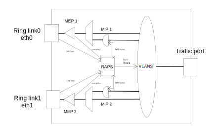

ERPS functional description
Ethernet Ring Protection Switching as described in ITU G.8032 is supported by the BSP.
The feature is implemented partly in the Linux kernel and partly in user-space application.
The kernel portion is not fully up-streamed, and the associated application will only work with a pre-patched kernel.
There is an 'erps_server' that must run in the background.
There is a 'erps' user space client application that based on arguments can be used to issue commands to create and configure ERPS instances.
1. Introduction
Multiple ERPS instances can be created sharing same port as ring link interface. The control VLAN and the protected VLANs must be unique per ERPS instance.
There can be a ERPS-MAX number of ERPS instances created. The maximum is 64.
There is a number of ERPS user space commands that enables:
-
Create and delete of ERPS instances.
-
Set configuration.
-
Set administrative commands.
-
Get configuration.
-
Get status information.
CFM (Connectivity Fault Management) is described in IEEE Std 802.1Q-2018 section 19-21
CFM MIP instances are required to be created on control VLAN interfaces to do the handling of received RAPS frames in the control VLAN.
CFM MEP instance can be created on ports to do ring link monitoring based on CCM.
CFM can be found here: https://github.com/microchip-ung/cfm
This is a model of a ERPS configuration:

2. ERPS commands
The below commands are for ERPS currently without interconnected rings.
ERPS commands:
erps create bridge <device> instance <1-ERPS-MAX> version <1-2> port0 <device> port1 <device>
erps delete bridge <device> instance <1-ERPS-MAX>
erps control bridge <device> instance <1-ERPS-MAX> mdlevel <0-7> vlanif0 <device>
vlanif1 <device>
erps rpl bridge <device> instance <1-ERPS-MAX> role <none,owner,neighbor> port <0,1>
erps vlans <add,delete,show> bridge <device> instance <1-ERPS-MAX> <list>
erps node-id bridge <device> instance <1-ERPS-MAX> <uc-mac>
erps ring-id bridge <device> instance <1-ERPS-MAX> <1-239>
erps command bridge <device> instance <1-ERPS-MAX> command <manual,force,clear> port <0,1>
erps revertive <enable,disable> bridge <device> instance <1-ERPS-MAX> timer <1-12>
erps hold bridge <device> instance <1-ERPS-MAX> timer <0-10000>
erps guard bridge <device> instance <1-ERPS-MAX> timer <1-2000>
erps config-show bridge <device> instance <1-ERPS-MAX>
erps status-show bridge <device> instance <1-ERPS-MAX> <all,state>
2.1. erps create
An ERPS instance is created.
-
bridge: Bridge device name.
-
instance: Instance number. Values <1-ERPS-MAX>.
-
version: Specify whether to use G.8032v1 or G.8032v2 of the RAPS protocol. Values <1-2>.
-
port0: Ring port0 device name.
-
port1: Ring port1 device name.
2.2. erps delete
An ERPS instance is deleted.
-
bridge: Bridge device name.
-
instance: Instance number. Values <1-ERPS-MAX>.
2.3. erps control
The ERPS control VLAN configuration.
The OAM level where RAPS frames are transmitted and received and the VLAN interfaces.
-
bridge: Bridge device name.
-
instance: Instance number. Values <1-ERPS-MAX>.
-
mdlevel: The OAM Maintenance Domain level. Values <0-7>.
-
vlanif0: The Ring port0 control VLAN interface device name.
-
vlanif1: The Ring port1 control VLAN interface device name.
Default mdlevel is 7.
2.4. erps rpl
The ERPS Ring Protection Link role configuration.
-
bridge: Bridge device name.
-
instance: Instance number. Values <1-ERPS-MAX>.
-
role: The RPL role. Values <none,owner,neighbor>.
-
port: The RPL ring port number. Values <0,1>
Default role is none.
2.5. erps vlans
The ERPS protected VLANs configuration. ERPS protected VLANs can be added or deleted. The added VLANs can be shown.
-
vlan operation. Values <add,delete,show>.
-
bridge: Bridge device name.
-
instance: Instance number. Values <1-ERPS-MAX>.
-
The list of VLANs, e.g. 2-10,123-456,4044.
Default is no protected VLANs.
2.6. erps node-id
The ERPS node ID configuration.
This is inserted in the RAPS PDU.
-
bridge: Bridge device name.
-
instance: Instance number. Values <1-ERPS-MAX>.
-
The node ID. Values is a UC MAC.
Default is the bridge MAC. Configuring 00:00:00:00:00:00 gives the bridge MAC.
2.7. erps ring-id
The ERPS ring ID configuration.
This is the last octet in the DMAC of the RAPS frame.
-
bridge: Bridge device name.
-
instance: Instance number. Values <1-ERPS-MAX>.
-
The ring ID. Values <1-239>.
Default ring ID is 1.
2.8. erps command
The ERPS administrative commands.
-
bridge: Bridge device name.
-
instance: Instance number. Values <1-ERPS-MAX>.
-
command: The administrative command. Values <manual,force,clear>.
-
port: The command ring port number. Values <0,1>
The command port is the port where control VLAN and the protected traffic VLANs are blocked.
The clear command will clear any manual or forced switch command.
The clear command will terminate any running WTR or WTB timer.
2.9. erps revertive
The ERPS revertive configuration.
When revertive is enabled the WTR timer is used to revert ERPS state to IDEL when any switch condition has cleared.
-
Revertive behavior. Values <enable,disable>.
-
bridge: Bridge device name.
-
instance: Instance number. Values <1-ERPS-MAX>.
-
timer: WTR timer. Values <1-12>. Resolution 1min.
Default revertive is disable.
2.10. erps hold
The ERPS hold-off timer configuration.
When a new (or more severe) defect occurs, action will not be executed until the hold-off timer expires.
-
bridge: Bridge device name.
-
instance: Instance number. Values <1-ERPS-MAX>.
-
The hold-off timer. Values <0-10000>. Resolution 1ms. 0 means no holdoff.
Default is 0. The hold off timer value must be divisible by 100.
2.11. erps guard
The ERPS guard timer configuration.
The guard timer is used to prevent ring nodes from acting upon outdated RAPS PDUs upon topology changes.
-
bridge: Bridge device name.
-
instance: Instance number. Values <1-ERPS-MAX>.
-
The guard timer. Values <1-2000>. Resolution 1ms.
Default is 500ms. The guard timer value must be divisible by 10.
3. ERPS Ring Configuration.
This section describes how to configure a three node ring with MEPs for ring
link monitoring based on CCM-DEFECT detection.
The ring link interfaces are eth0 and eth1.
The service frame add/drop port is eth3.
Protected VLANs are 100, 200, 300.
Control VLAN is 400.
Control OAM level is 7.
Nodes are physically connected like this:
It is recommended that the ring protocol functionality is tested before adding protected VLAN to the ring.
3.1. Control VLAN configuration
On all nodes bridge br0 must be created and the Control VLAN interfaces must be added.
Bridge configuration: ip link add name br0 type bridge ip link set dev br0 up ip link set dev br0 type bridge vlan_filtering 1 ip link set dev eth0 master br0 ip link set dev eth1 master br0 ip link set dev eth2 master br0
Adding control VLAN interfaces on ring ports: ip link add link eth0 name eth0.400 type vlan id 400 ip link add link eth1 name eth1.400 type vlan id 400 ip link set dev eth0.400 up ip link set dev eth1.400 up
Adding RAPS frame handling MIPs on the control VLAN interfaces: cfm mip-create bridge br0 instance 1 direction down port eth0 vlan eth0.400 cfm mip-create bridge br0 instance 2 direction down port eth1 vlan eth1.400 cfm mip-config bridge br0 instance 2 mac 00-00-00-03-00-02 level 4 raps redirect cfm mip-config bridge br0 instance 1 mac 00-00-00-03-00-01 level 4 raps redirect
3.2. Node 1
This node is the RPL owner.
RPL is on eth0
MEP configuration:
cfm mep-create bridge br0 instance 1 domain port direction down port eth0
cfm mep-config bridge br0 instance 1 mac 00-00-00-00-01-00 level 7 mepid 10
cfm cc-config bridge br0 instance 1 enable 1 interval 3ms3
domain-name ABCDEFGHIJ short-name KLMNOPQRST
cfm cc-peer bridge br0 instance 1 mepid 31
cfm cc-ccm-tx bridge br0 instance 1 dmac 01-80-C2-00-00-30 period 1000
cfm mep-create bridge br0 instance 2 domain port direction down port eth1
cfm mep-config bridge br0 instance 2 mac 00-00-00-00-01-01 level 7 mepid 11
cfm cc-config bridge br0 instance 2 enable 1 interval 3ms3
domain-name ABCDEFGHIJ short-name KLMNOPQRST
cfm cc-peer bridge br0 instance 2 mepid 20
cfm cc-ccm-tx bridge br0 instance 2 dmac 01-80-C2-00-00-30 period 1000
ERPS configuration: erps_server & erps create bridge br0 instance 1 version 1 port0 eth0 port1 eth1 erps ring-id bridge br0 instance 1 11 erps rpl bridge br0 instance 1 role owner port 0 erps control bridge br0 instance 1 mdlevel 4 vlanif0 eth0.400 vlanif1 eth1.400
Note that no protected VLANS are added to the ERPS. This is done when the full ring is enabled and tested for protocol functionality.
3.3. Node 2
This node is a normal node - not connected to RPL.
MEP configuration:
cfm mep-create bridge br0 instance 1 domain port direction down port eth0
cfm mep-config bridge br0 instance 1 mac 00-00-00-00-02-00 level 7 mepid 20
cfm cc-config bridge br0 instance 1 enable 1 interval 3ms3
domain-name ABCDEFGHIJ short-name KLMNOPQRST
cfm cc-peer bridge br0 instance 1 mepid 11
cfm cc-ccm-tx bridge br0 instance 1 dmac 01-80-C2-00-00-30 period 1000
cfm mep-create bridge br0 instance 2 domain port direction down port eth1
cfm mep-config bridge br0 instance 2 mac 00-00-00-00-02-01 level 7 mepid 21
cfm cc-config bridge br0 instance 2 enable 1 interval 3ms3
domain-name ABCDEFGHIJ short-name KLMNOPQRST
cfm cc-peer bridge br0 instance 2 mepid 30
cfm cc-ccm-tx bridge br0 instance 2 dmac 01-80-C2-00-00-30 period 1000
ERPS configuration: erps create bridge br0 instance 1 version 1 port0 eth0 port1 eth1 erps ring-id bridge br0 instance 1 22 erps control bridge br0 instance 1 mdlevel 4 vlanif0 eth0.400 vlanif1 eth1.400
Note that no protected VLANS are added to the ERPS. This is done when the full ring is enabled at tested for protocol functionality.
3.4. Node 3
This node is the RPL neighbor. RPL is on eth1
MEP configuration:
cfm mep-create bridge br0 instance 1 domain port direction down port eth0
cfm mep-config bridge br0 instance 1 mac 00-00-00-00-03-00 level 7 mepid 30
cfm cc-config bridge br0 instance 1 enable 1 interval 3ms3
domain-name ABCDEFGHIJ short-name KLMNOPQRST
cfm cc-peer bridge br0 instance 1 mepid 21
cfm cc-ccm-tx bridge br0 instance 1 dmac 01-80-C2-00-00-30 period 1000
cfm mep-create bridge br0 instance 2 domain port direction down port eth1
cfm mep-config bridge br0 instance 2 mac 00-00-00-00-03-01 level 7 mepid 31
cfm cc-config bridge br0 instance 2 enable 1 interval 3ms3
domain-name ABCDEFGHIJ short-name KLMNOPQRST
cfm cc-peer bridge br0 instance 2 mepid 10
cfm cc-ccm-tx bridge br0 instance 2 dmac 01-80-C2-00-00-30 period 1000
ERPS configuration: erps create bridge br0 instance 1 version 1 port0 eth0 port1 eth1 erps ring-id bridge br0 instance 1 33 erps rpl bridge br0 instance 1 role neighbor port 1 erps control bridge br0 instance 1 mdlevel 4 vlanif0 eth0.400 vlanif1 eth1.400
Note that no protected VLANS are added to the ERPS. This is done when the full ring is enabled at tested for protocol functionality.
3.5. Making ring operational
When the ring is configured, to make it operational protecting VLANs, it must be tested for
protocol functionality.
When ring has proved able to handle link failure and link restore and is in IDLE state
it is ready to add protected VLANs.
On all nodes 1-3:
Adding protected traffic VLANs to bridge: bridge vlan add dev br0 vid 100 self bridge vlan add dev br0 vid 200 self bridge vlan add dev br0 vid 300 self Protected traffic VLANs on ring ports and traffic port: bridge vlan add dev eth0 vid 100 bridge vlan add dev eth1 vid 100 bridge vlan add dev eth2 vid 100 bridge vlan add dev eth0 vid 200 bridge vlan add dev eth1 vid 200 bridge vlan add dev eth2 vid 200 bridge vlan add dev eth0 vid 300 bridge vlan add dev eth1 vid 300 bridge vlan add dev eth2 vid 300
Adding VLANs to the ERPS instance: erps vlans bridge br0 instance 1 100,200,300